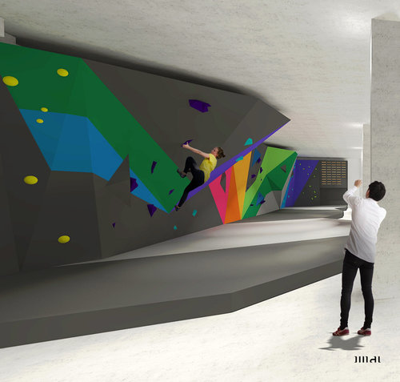

A skatepark and climbing wall is at the heart of the basement level.

A mezzanine with an adaptable workspace and creative pop-up exhibition zone overlooks the skatepark.
The basement level contains workshop spaces for art, design, technology, music, yoga and fitness. The entire floor opens
up for live events and community markets.